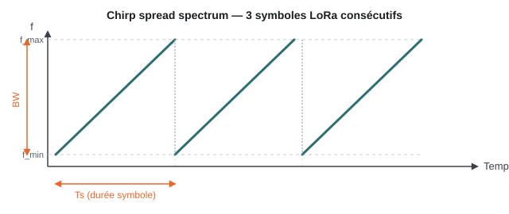

LoRa & LoRaWAN¶
Qu'est-ce que LoRa ?¶
LoRa (Long Range) est une technique de modulation de la couche physique radio, développée et brevetée par Semtech. Elle repose sur l'étalement de spectre par chirp (CSS — Chirp Spread Spectrum) : chaque symbole est encodé sous la forme d'un « chirp », un signal dont la fréquence balaie linéairement toute la largeur de bande disponible pendant une durée fixe, avant de revenir instantanément à sa fréquence de départ.

Cet étalement rend le signal très résistant au bruit et aux interférences : un récepteur LoRa peut démoduler un signal dont la puissance est inférieure au niveau de bruit ambiant, ce qui explique en grande partie sa portée exceptionnelle pour une consommation minime.
Paramètres de la modulation¶
| Paramètre | Rôle | Valeurs typiques |
|---|---|---|
| Spreading Factor (SF) | Nombre de « chirps » utilisés par bit — plus il est élevé, plus la portée augmente mais plus le débit diminue | SF7 à SF12 |
| Bandwidth (BW) | Largeur de bande occupée par le signal | 125 / 250 / 500 kHz |
| Coding Rate (CR) | Redondance ajoutée pour la correction d'erreur (FEC) | 4/5 à 4/8 |
Le choix de ces trois paramètres définit un compromis portée ↔ débit ↔ temps sur l'air, ajustable au cas par cas (souvent automatiquement via l'Adaptive Data Rate, ADR).
Fréquences utilisées¶
LoRa fonctionne dans les bandes ISM sans licence, dont l'attribution dépend de la région :
- EU868 — 863–870 MHz (Europe, dont le Bénin et l'espace UEMOA s'alignent généralement sur les recommandations régionales proches de cette bande)
- US915 — 902–928 MHz (Amérique du Nord)
- AS923 — 915–928 MHz (Asie)
Débit et portée¶
- Débit : de 0,3 kbps (SF12, BW 125 kHz — portée maximale) à 50 kbps (SF7, BW 500 kHz — portée réduite).
- Portée : jusqu'à ~15 km en zone dégagée (rase campagne), de quelques centaines de mètres à quelques kilomètres en zone urbaine dense selon les obstacles.
- Consommation : très faible — un capteur alimenté par pile peut tenir plusieurs années.
LoRaWAN : le protocole réseau¶
LoRaWAN est le protocole de réseau construit au-dessus de la couche physique LoRa. Il définit comment les objets connectés (end-devices) communiquent avec l'infrastructure :

- End-devices : les capteurs/objets, qui émettent en LoRa vers toute passerelle à portée (pas d'association préalable à une passerelle en particulier).
- Passerelle (Gateway) : reçoit les trames LoRa et les relaie en IP (Ethernet, Wi-Fi ou 4G) vers le network server, sans les interpréter.
- Network Server : dé-duplique les messages reçus par plusieurs passerelles, gère la sécurité et route vers l'application server.
- Application Server : exploite les données métier.
Classes d'appareils¶
| Classe | Comportement | Cas d'usage |
|---|---|---|
| A | La plus économe : le device n'écoute que juste après une émission | Capteurs, relevés périodiques |
| B | Fenêtres de réception programmées en plus de la classe A | Actionneurs nécessitant un contrôle plus réactif |
| C | Réception quasi continue | Appareils alimentés en continu, contrôle temps réel |
Sécurité¶
LoRaWAN chiffre les échanges en AES-128 à deux niveaux : la clé réseau (intégrité entre le device et le network server) et la clé applicative (confidentialité de bout en bout jusqu'à l'application server).
Rôle dans ce projet¶
Dans l'architecture Solution 1 de ce projet, LoRaWAN est combiné au BLE : un relais reçoit les données via BLE depuis le smartphone puis les fait transiter sur le réseau maillé LoRaWAN, pour la télémétrie, la messagerie légère et le paiement à faible volume. Voir la comparaison complète.